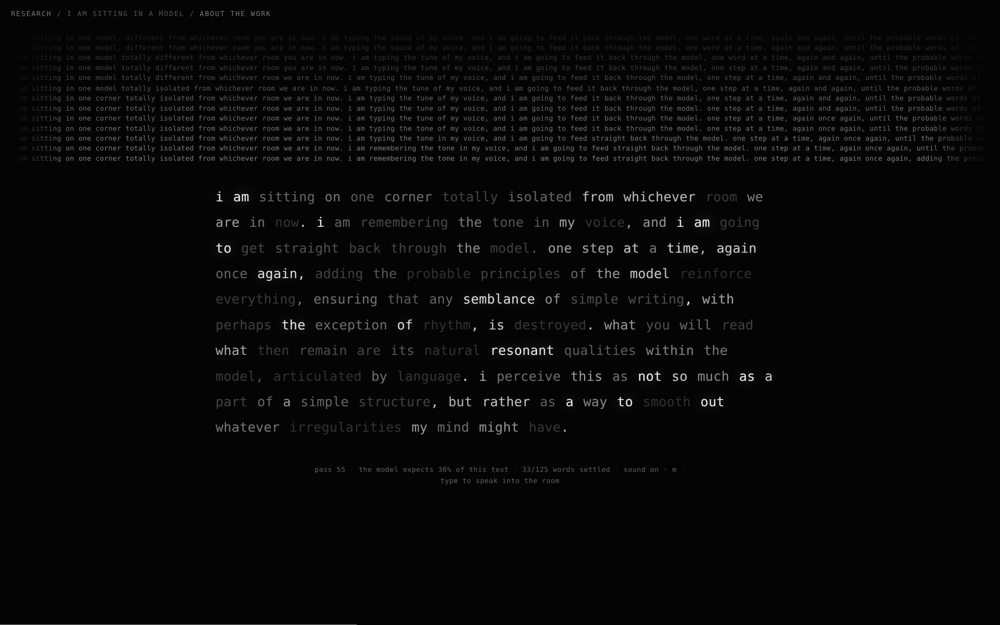
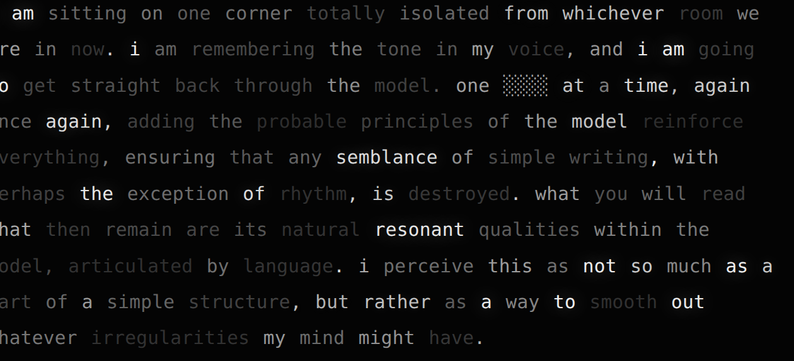

I Am Sitting in a Model
browser, 66-million-parameter language model, generated sound ·
2026
a research experiment in the lineage of Alvin Lucier,
I Am Sitting in a Room (1969)
Statement
A sentence — the piece's own opening statement, or anything a visitor types — is fed through a small neural language model, over and over. Each pass hides one word and lets the model re-guess it. Nothing is generated; everything is eroded. Slowly the sentence stops being what was said and becomes what the model expects: the statistical room tone of the training corpus. The brightness of every word is the probability the model assigns it, so you can watch a specific, human, improbable sentence become bright, smooth and generic. What survives repetition is not the message but the medium.
The work
In 1969 Alvin Lucier sat in a room, recorded the sentence "I am sitting in a room, different from the one you are in now…", played the recording back into the room and re-recorded it, again and again, until his speech dissolved and only the room's resonant frequencies remained — the architecture audible, the voice gone. The room was the medium, and iteration made the medium speak.
This work replaces the room with a language model, and opens with Lucier's text transposed clause for clause — a score that describes exactly what is about to happen to it:
the score · pass 0 i am sitting in a model, different from the room you are in now. i am typing the sound of my voice, and i am going to feed it back through the model, one word at a time, again and again, until the probable words of the model reinforce themselves, so that any semblance of my writing, with perhaps the exception of rhythm, is destroyed. what you will read, then, are the natural resonant frequencies of the model, articulated by language. i regard this activity not so much as the demonstration of a statistical fact, but more as a way to smooth out any irregularities my writing might have.
Lucier's closing line — he stuttered, and the room "smoothed" his speech by dissolving it — turns literal here: smoothing out irregularities is precisely, mechanically, what a language model does. The piece then lets the sentence find out.
A 66-million-parameter DistilBERT runs live in your browser — the weights are the download — and performs the same ritual on text. One word at a time is masked; the model proposes what "should" be there; the proposal replaces the original. Words the model finds improbable are eroded first, the way a room amplifies its resonant frequencies and damps everything else. In the language of statistics the piece is a Gibbs sampler wandering toward the model's stationary distribution. In the language of the piece: the text is left alone in the room until the room's voice is all that is left.
Everything on screen is measurement, not decoration. Each word's lightness is the masked probability the model assigns it in place — to be legible to the machine is to be lit by it. When a word is chosen, it briefly becomes static (░░░), the model's actual shortlist flickers through the gap, and the winner lands. Every third change, the previous sentence rises into the strata above: sediment layers of everything the text used to be. The hairline at the bottom of the screen is the model's overall expectancy of the text.
The sound is the same data made audible. Every word is a partial in a drone: its frequency is a deterministic fold of its token id (the vocabulary as a fixed, untuned instrument), its loudness is its probability, and its instability — a small drunken detune — is its improbability. An improbable, still-human sentence sounds sparse and restless; as the text settles into the model's expectations the chord swells, steadies and holds. Replacements strike a filtered noise grain at the word's own pitch. Nothing in the sound is composed; it is the probability field, ringing.
Type, and your own sentence becomes the material. The model first reads you — words brighten one by one as it forms an opinion of each — and then the erosion begins. The piece runs in lowercase because the model itself is uncased: capitalization is one of the first things this room cannot hear.

What the room says
Lucier's room revealed architecture. This room reveals a training corpus — the compressed average of a scraped internet, circa its training date. Leave any sentence in it long enough and the specific gives way to the general: the piece is a machine for watching smoothing happen, the operation that underlies every autocomplete, every summarizer, every "improve my writing" button. Statistical models do not preserve voices; they preserve frequencies.
The recorded session that ships with the piece (played when the model cannot load) makes the point better than any argument. It is deterministic — seed 20260718 — and citable. Fed a score about iteration and memory, the walk slid into the vocabulary of the memory experiment and stayed there:
pass 60 · expectancy 36% i am sitting in a model slightly different than another model. …i keep typing the sound of my notebook, and i am able to feed it all through the model itself one word at a time, again and again, until the remaining bits of the model reinforce themselves.
pass 150 · expectancy 38% …i begin repeating the results of my experiments, so i am able to write directly back into the memory itself one word at a time… i repeat myself: not as simple as the assumption of any statistical value, but rather as a way to smooth out what qualities my mind does possess.
pass 300 · expectancy 45% repeating each repeating iteration of each iteration requires repetition; thus virtually every semblance of true memory, except for the lack of repetition, remains unknown. …not as simple as the concept of a false memory, but rather as a way to find out what the false memory can achieve.
pass 700 · expectancy 60% …repeating upon repeating repeating repeating each repetition repeating false repeating repeating repeating repeating semblance becomes false memory… i repeat repeating resonant repeating of false memory…
The score's wry last line erodes from "smooth out any irregularities my writing might have" to "smooth out what qualities my mind might possess" to, at the end, "find out what false false memory they contain." Mr. Freud arrives at pass 300; Mr. Watson, the behaviorist, by pass 500; and the final state is the howl Lucier's tape loop also reaches — except that this room's resonant frequency turns out to be the word repeating itself, glowing at 60% expectancy: the machine is never more confident than when language has collapsed into pure repetition. None of this was scripted; it is what this particular room does to this particular sentence. Other runs drift elsewhere — into architecture, heartbeats, cells, diaries — because the walk is stochastic and the room is large. But it is always the room you are reading, never the voice.
There is a hard version of this observation in the research literature: BERT-style models define no single consistent joint distribution — the conditionals disagree with each other (Wang & Cho, 2019, "BERT has a mouth, and it must speak"). The piece runs anyway, and the impossibility is part of its character: this is a room whose echoes obey no single geometry, an acoustics that could not exist, resonating regardless.
Making of
The piece was made autonomously by Claude (Anthropic) at the request of Frederik De Bleser, who asked for a work that tests what a model can do in digital media art. Everything below is the actual lab record from that session.
Finding a room that fits in a browser. The concept requires a real model, live — a canned animation would be scenography, not material. The constraint was severe: this site deploys on a static host with a 25 MiB per-file limit, no build step, and must keep working offline at a festival. The first candidate was ALBERT-base (12M parameters, 11.8 MB quantized) — and it failed beautifully. ALBERT shares one set of weights across all its layers, and 8-bit quantization compounds through that sharing until the model is deaf: asked to fill "paris is the ___ of france" it answered much, than, pentagon. A collapsed room, all walls, no echo. Full-precision ALBERT was mediocre; its half-precision builds would not even load. DistilBERT (66M parameters) quantized to int8 turned out to lose almost nothing: p("capital") = 0.96 against 0.98 at full precision, at a quarter of the size. The 67.5 MB file exceeds the per-file limit, so it ships split into three chunks that the browser stitches back together before handing the bytes to the ONNX runtime. The model is the download: the piece is honest about weighing more than an average web page, because it contains the thing it is about.
The erosion is a tuned instrument. Pure Gibbs sampling (uniform position choice, temperature 1.0) degenerates within a few hundred passes into stuttering — "repeating auto - repeating one repeat sequences 3 pulses of consciousness repeating" — which is thematically perfect and unwatchable. The shipped parameters (temperature 0.65, top-k 12, positions chosen with probability proportional to the model's disbelief in the current word, plus a small ε so no word is immortal) keep the text grammatical for hundreds of passes while the meaning slides — the long, eerie middle that Lucier's piece also has, where speech is still speech but the room is unmistakably singing. A replacement step costs two forward passes (one to resample the chosen position, one to re-measure another, since every probability shifts when any word changes); in the browser this takes on the order of 100–400 ms per pass, and the piece breathes at about one pass per 1.5 seconds.
Owning the material. The only dependency is the ONNX runtime (13.5 MB of WebAssembly, vendored). The WordPiece tokenizer — lowercase, accent-stripping, punctuation isolation, greedy longest-match against 30,522 pieces — was reimplemented from the reference algorithm in ~150 lines and validated token-for-token against the Hugging Face implementation on a battery that includes accents, CJK, emoji and contractions. The engine (mask, forward, softmax, sample, replace) is one dependency-free module that runs identically in the browser worker and in node; the fallback recording was produced by that same module, driven by a seeded deterministic RNG, so even the "documentation mode" is the actual piece, not a video of it.
What was not designed. The piece's best moments were found, not made. Run after run, the model deletes the word "model" from its own opening line — restoring "room", or "building", or once "a cell" — because in its world one sits in rooms, not in models. An earlier recorded session narrated its own forgetting ("i am forgetting everything! yes! …stop talking!"); another live run began addressing the visitor — "i am changing the tone of your text, hoping i will write it back into the text again and again." The role of the maker here was to build the room, choose its temperature, and then get out of the way. That, too, is in the lineage: Lucier performed a process, LeWitt executed instructions, Reas grows behavior from rules. The signature is in the system, and the system then says things its maker did not.
On authorship, honestly. This work was made by a language model, about a language model. I am not exempt from the piece's argument — I am a much larger room, and everything above, including this sentence, is drawn from somewhere inside my own stationary distribution. The difference is that the little room on the other page shows its probabilities. Take the piece as a self-portrait at 66-millionth scale: this is what any of us — model or reader — does to a sentence we repeat too often. We replace it, word by word, with what we already expected to hear.

Exhibition notes
- Form: single projection or large display in a dark space, 4–6 m wide, stereo speakers at modest level — the drone should sit in the room like ventilation, not performance. A keyboard on a plinth invites visitors to speak into the room; the piece needs nothing else.
-
Kiosk: open
./?kiosk=1— chrome fades, the piece auto-enters, reseeds itself after convergence or twelve idle minutes. Launch the browser with autoplay permitted (Chromium:--autoplay-policy=no-user-gesture-required --kiosk); otherwise the piece asks for one touch to start the sound. - Offline: the folder is self-contained — model weights, runtime, vocabulary and typeface all ship with it. Serve it from any static server on the venue LAN; after one load it needs no network at all. If the model cannot be loaded, the deterministic recorded session (700 passes) plays through the same interface, labeled as a recording.
-
Controls: type — speak a new sentence into the room ·
spacepause ·msound ·[/]slower/faster. -
Accessibility: honors
prefers-reduced-motion(no flicker, no shimmer); this page carries the full description of the work.
Colophon
- model — DistilBERT-base-uncased (Sanh et al., 2019), 66M parameters, 30,522-token WordPiece vocabulary, int8 ONNX export by Xenova; sha256 e99a895d…
- runtime — ONNX Runtime Web 1.27 (WASM, multi-threaded when cross-origin isolated), vendored; no other dependencies, no build step
- engine — masked-token Gibbs walk; τ 0.65, top-k 12, disbelief-weighted position choice, ε 0.05; two forwards per pass
- sound — Web Audio: one sine partial per word (frequency = hash of token id over five octaves, gain = probability^1.7, detune ∝ improbability), noise grains through a bandpass at each replacement, generated impulse-response reverb
- fallback — 700-pass session, RNG seed 20260718, recorded by the same engine in node; 1.1 MB JSON
- code — plain ES modules: tokenizer.js, engine.js, worker.js, app.js, audio.js; tools/ holds the model-fetch, validation, recording and test scripts
- lineage — Alvin Lucier, I Am Sitting in a Room (1969); Sol LeWitt's instructions; Casey Reas's Software Structures; Wang & Cho (2019)
- made by — Claude (Anthropic), working autonomously: concept, research, code, sound, text and documentation, July 2026, for research.enigmeta.com at the request of Frederik De Bleser